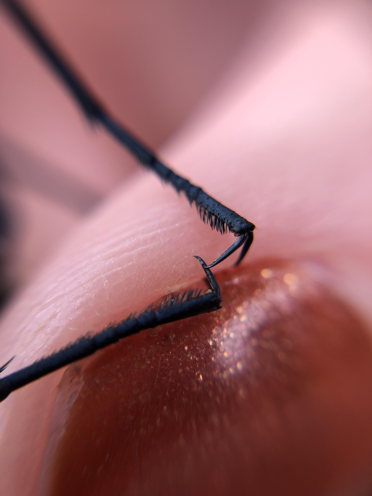
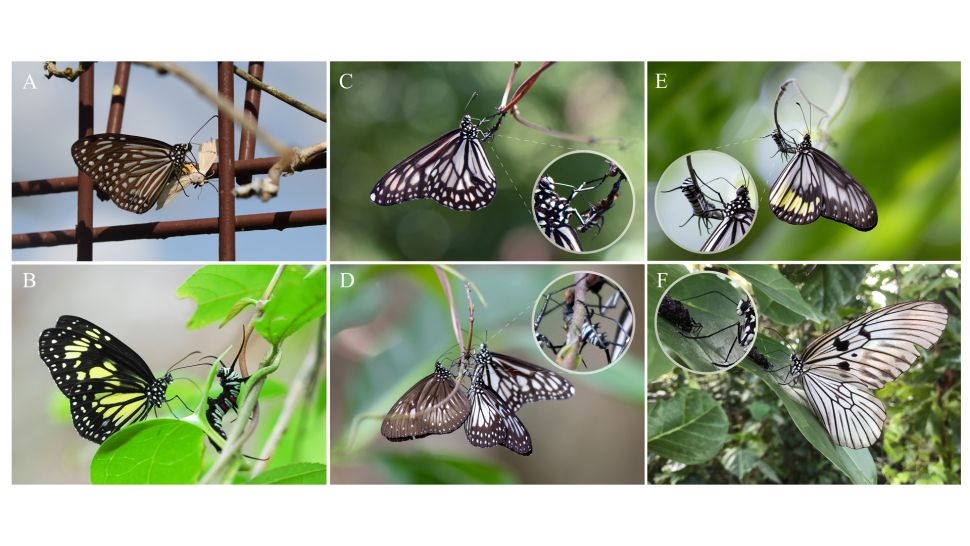

Not all caterpillars grow up to be beautiful butterflies. Some become living milkshakes for their dads, who guzzle caterpillar body fluids to attract the ladies.
butterfly preparing to feed
Recently, scientists reported the first evidence of butterflies sipping from the bodies of caterpillars — dead and alive. They observed adult milkweed butterflies in North Sulawesi, Indonesia, using tiny claws on their feet to scratch wounds in caterpillars' bodies so they could lap the liquid that oozed out.
butterfly claws
Over three days, the scientists counted seven species of milkweed butterflies that scraped and sipped living and dead caterpillars (it is unknown if the dead caterpillars were drunk to death or died of their wounds). One possible explanation for why the butterflies find caterpillars so delicious is because milkweed alkaloids accumulate in the caterpillars' bodies from the leaves that they eat, making their internal "juices" a more potent, alkaloid-rich brew — and thereby more attractive to thirsty males, the scientist suggested.
Learn More:https://www.livescience.com/butterflies-drink-their-babies.html